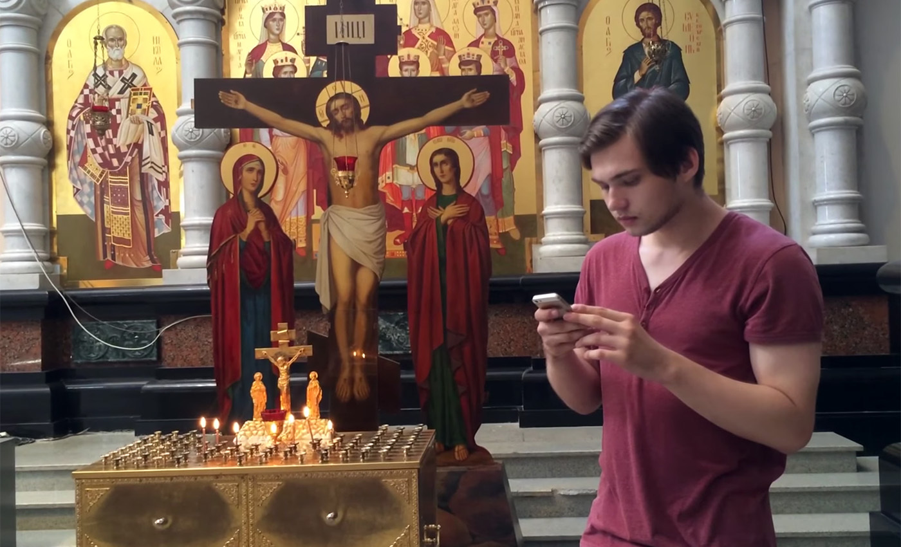

Руслан Соколовский после полутора месяца домашнего ареста снова отправляется в СИЗО
Суд в Екатеринбурге ужесточил меру пресечения блогеру Руслану Соколовскому, обвиняемому в экстремизме и оскорблении чувств верующих после игры в Pokemon Go в храме. Соколовского отправили в СИЗО до 23 января 2017 года. Заседание по продлению меры пресечения Соколовского должно было пройти накануне, 27 октября, однако обвинение настояло на присутствии в суде самого видеоблогера. Вчера же стало известно, что сторона обвинения собирается предоставить документы о нарушении Соколовским условий домашнего ареста. Рано утром 2 сентября видеоблогера Руслана Соколовского задержали в Екатеринбурге по делу о его видеороликах с YouTube-канала. Соколовского подозревают в двух эпизодах по части 1 статьи 282 УК (возбуждение ненависти по религиозному признаку) и части 2 статьи 148 УК (оскорбление чувств верующих в местах, предназначенных для проведения богослужений). Проверку в отношении блогера начали после публикации на его канале видео из храма-памятника, построенного в 2003 году на месте расстрела царской семьи, где Соколовский играл в Pokemon Go. 3 сентября суд отправил блогера в СИЗО, но спустя несколько дней областной суд отпустил его под домашний арест. Оба заседания прошли в закрытом режиме. 19 октября свердловское ГУФСИН сообщило о проверке обстоятельств публикации нового ролика блогера.
Руслан Соколовский ловит покемона в храме
Cуд отправил 3 сентября блогера в СИЗО, но спустя несколько дней областной суд отпустил его под домашний арест. Оба заседания прошли в закрытом режиме. 19 октября свердловское ГУФСИН сообщило о проверке обстоятельств публикации нового ролика блогера. Заседание по продлению меры пресечения Соколовского должно было пройти накануне, 27 октября, однако обвинение настояло на присутствии в суде самого видеоблогера. Вчера же стало известно, что сторона обвинения собирается предоставить документы о нарушении Соколовским условий домашнего ареста.
Руслан был гордостью школы. После пятого класса даже не учил уроки, все "хватал" на уроках, учился отлично, при этом участвовал в олимпиадах, читал очень много.- говорит мать блогера о сыне
Назначенное на 12:00 по местному времени (10:00 мск) заседание перенесли на час раньше, однако теперь его задерживают. В Кировский районный суд уже приехал сам Соколовский, также заседания ожидает его мать. Видеоблогер успел пообщаться с собравшимися в суде журналистами и рассказал, что нарушением домашнего ареста сочли визит его девушки, которая пришла поздравить Соколовского с днем рождения.

Видеоблогер Руслан Соколовский с адвокатами Ильченко и Абрамовым перед началом заседания в Кировском районном суде
Адвокаты Соколовского будут возражать против продления меры пресечения подзащитному в виде домашнего ареста. В своем возражении они ссылаются на постановление Пленума верховного суда, согласно которому помещать под домашний арест или отправлять в СИЗО фигуранта уголовного дела можно «только после проверки судом обоснованности подозрения» его причастности к преступлению. Защитники отмечают, что заключение специалиста Юлии Тагильцевой не может обосновывать подозрение, поскольку эксперт не была компетентна по вопросам, который ей задал Центр «Э».